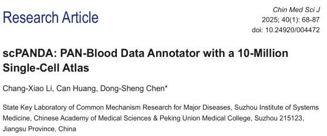
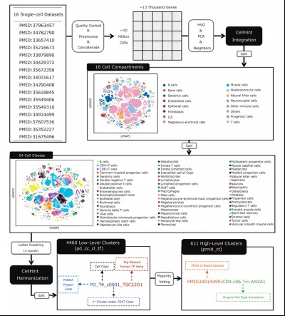
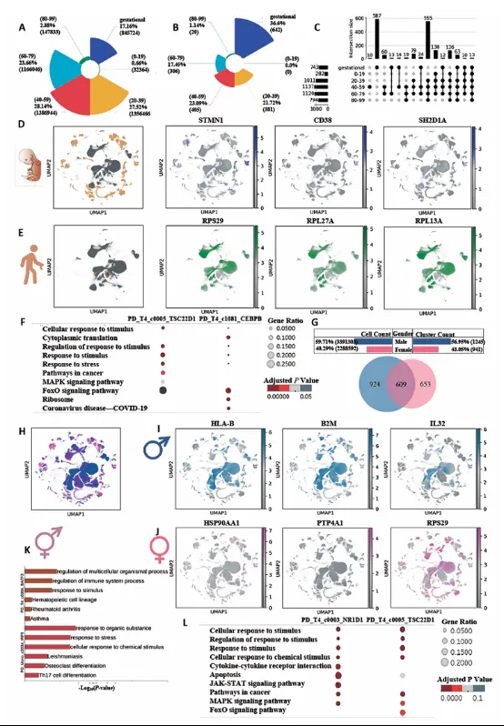
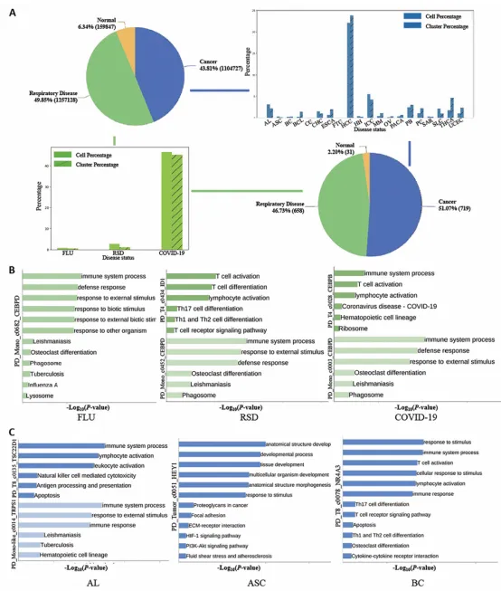
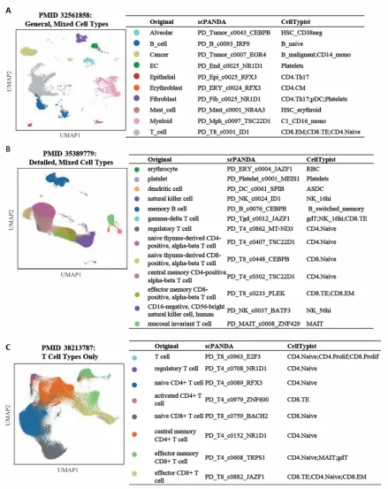
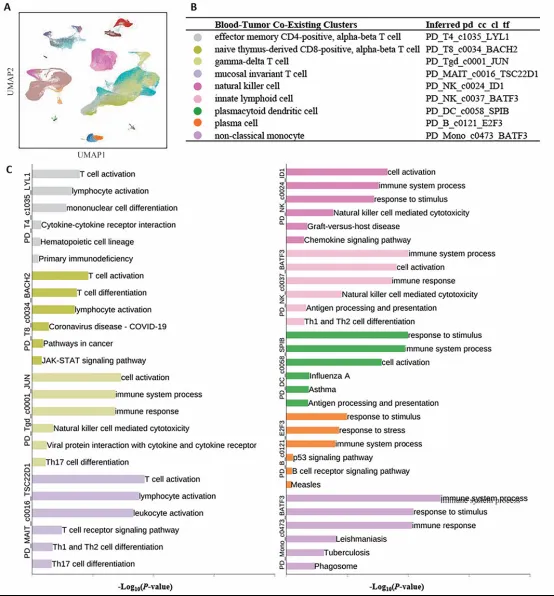
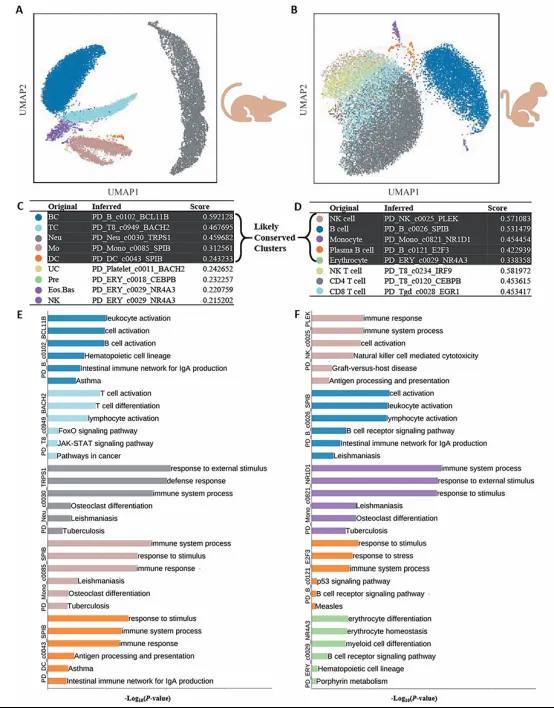

千万级单细胞图谱|泛血液细胞注释工具——scPANDA
原文：https://mp.weixin.qq.com/s?__biz=MzAwMzIzOTk5OQ==&mid=2247529741&idx=1&sn=2a916b12b5d5363be9ee496972fff274&chksm=9b3c0c5dac4b854b9313e8efa9169aaed5cdb27ffe673d8e35c8428b851edc55e5dda674d59a#rd 合集：文献速递
一、写在前面
本次分享的文章题为“SCPANDA: PAN-Blood Data Annotator with a 10-Million Single-Cell Atlas”。作者整合了超千万级的单细胞数据用于泛血液数据注释工具的构建，相信如此数据规模孕育出的工具，训练结果可信度一定在线~DOI:10.1016/j.xgen.2025.100774

免疫细胞在人体的生理和病理状态下都发挥着重要作用。单细胞技术的进步使得研究人员能够以前所未有的精确度观察细胞动态，解决了传统批量测序方法无法解决的细胞异质性问题，这些技术进步极大地推动了血液学和免疫学的研究。目前的注释方法主要分为三类：1.基于标记基因的方法（例如CellAssign）：通过特定基因标记和分类细胞，从而确定细胞类型。**2.**基于相似性的方法 （例如SingleR）：根据细胞与预定义参考细胞的相似性来进行注释。**3.**基于机器学习的方法 （例如CellTypist）：利用概率预测，从降维空间中进行无偏特征选择来进行细胞分类，但目前缺乏专门用于血液系统细胞注释的工具。
这篇文章中，作者开发了scPANDA（PAN-blood单细胞数据注释器），利用包含1000万个细胞的综合图谱来推断血液系统中的细胞类型。这个大规模的单细胞RNA测序数据集来自16项研究，通过基于Scanpy和CellHint的生物信息学流程进行处理，它提供了一个专门的工具，解决了免疫细胞注释的复杂性问题，支持血液学和免疫学的进一步研究。
如果需要数据分析指导 、生信热点全文复现 、自测数据个性化分析 辅导、常态化实验学习，欢迎联系客服微信[Biomamba_zhushou]
二、 数据收集、质量控制和预处理
首先作者整合了16 项研究的原始数据（ Fig. 1），包含1121 万单细胞转录组，涵盖衰老、COVID-19感染、细菌感染、肿瘤等多种生理与病理状态，通过Scanpy 工具剔除低质量细胞（基因数<200或>6000、线粒体基因占比>15%），最终保留984万高质量细胞。基于高变基因（highly variable genes, HVGs）进行主成分分析 （principle component analysis, PCA），保留前3000个HVGs用于后续分析。
自下而上的分类方法****
之后，作者 通过自下而上的方法，将1030种细胞类型划分16个细胞大类，然后再细分54个细胞亚类。为了实现对1000万细胞图谱的更精细划分，在每个细胞类别（cell class）内部，作者使用scanpy.tl.leiden进行了两次Leiden聚类，每次的分辨率都设置为1.0。第一轮聚类， 识别出粗粒度的细胞亚群，捕捉较大的细胞亚群；第二轮聚类 进一步细化这些粗粒度的聚类，通过检测初始聚类中更细微、更均匀的细胞亚群来实现，分为低层次聚类和高层次聚类， 经过筛选和优化后，最后血液图谱规模为9,841,765个细胞。

Fig.1****
与年龄和性别相关的差异表达基因和富集****
在分析之后，首先作者关注了年龄与性别差异， 通过对年龄信息进行预处理和标准化，获得了与图谱 50.09% 的细胞相关的 6 个年龄区间。结果展示了不同年龄区间的细胞计数分类（Fig.2A）以及不同年龄组的聚类数量（Fig.2B）,使用UpSet图（Fig.2C）来可视化不同年龄组之间的细胞计数交集，结果显示不同年龄组之间的细胞重叠较少，表明细胞类型和功能在不同年龄段可能存在显著差异，且妊娠期细胞的独特聚类数量较多，可能反映了其特殊的生物学状态。
同时，通过分析作者发现“妊娠”T 细胞簇中最常见的差异表达基因为STMN1、CD38和SH2D1A（Fig.2D）; “80-99岁”T细胞聚类中最常见的差异表达基因为RPS29、RPL27A和RPL13A（Fig.2E），且KEGG富集分析显示妊娠期T细胞聚类主要富集于与细胞应激反应和刺激响应相关的通路，反映了妊娠期细胞对环境变化的高度敏感性。80-99岁”T细胞聚类则富集于与细胞老化、核糖体功能和COVID-19相关的通路，反映了老年细胞的生物学特征。除此之外，作者还展示了属于男性（蓝色）、女性（粉色）和性别中性（紫色）的细胞分布（Fig.2H），且男性聚类中HLA-B、B2M和IL32差异最明显，女性聚类中HSP90AA1、PTP4A1和RPS29差异最明显（Fig.2I-J）。

Fig.2
图谱与疾病状态间关联****
接下来，作者探究了分析结果与疾病之间的关联 ，首先展示了不同疾病在图谱中的分布情况，突出了COVID-19在呼吸系统疾病中的主导地位，以及肝细胞癌（HCC）在癌症中的显著地位（Fig.3A）。之后，作者聚焦于三种呼吸系统疾病（流感、呼吸系统紊乱和COVID-19）的细胞簇，GO分析显示了与每个细胞簇相关的最重要的生物过程、分子功能和细胞组分，KEGG分析突出了每个细胞簇中富集的关键代谢和信号通路（Fig.3B）。

Fig.3
数据集验证****
在应用上，作者 在3个独立数据集中（PMID:32561858、35389779、38213787）验证注释的准确性，将原始的一般细胞类型与scPANDA推断出的低水平细胞簇进行了对应。结果显示，每种原始细胞类型都能很好地匹配到相应的低水平细胞簇（Fig.4A-C）；表明scPANDA在处理复杂数据集时具有较高的准确性和鲁棒性。

Fig.4
除此之外，scPANDA不仅能处理血液来源的细胞数据，还能扩展到多组织数据集，例如在肾细胞癌（RCC）数据集中，scPANDA能够将来自血液和肾脏组织的混合细胞类型精确地映射到低水平细胞簇（Fig.5A-B），并通过富集分析和差异表达基因分析揭示其功能特征（Fig.5C）。

Fig.5
跨物种分析****
scPANDA 工具不仅能够用于人类单细胞数据的注释，还可以跨物种应用于小鼠（Mus musculus）和猕猴（Macaca fascicularis）的细胞类型注释（Fig. 6A-B）。作者通过scPANDA分析，将小鼠的原始细胞类型映射到人类对应的细胞类型，并计算了相关性分数以反映推断的置信度（Fig. 6C-D）,聚焦小鼠与人类之间五个可能保守的细胞簇的顶部基因本体（GO）和KEGG通路，以及相关的差异表达基因（DEGs），结果显示差异基因与适应性免疫反应、先天防御机制等特定的生物学过程和通路相关（Fig. 6E）。****

Fig.6
对TCGA 癌症中RNA-seq 数据集进行反卷积****
除了作为 scPANDA的基础外，图谱中的细胞簇还可以作为解卷积（deconvolution）批量RNA-seq数据的宝贵参考，例如33种TCGA癌症的数据集，从腺样囊性癌（ACC）到脉络膜黑色素瘤（UVM）。通过采用非负最小二乘法（NNLS）算法最小化批量数据与推断的细胞类型组成之间的差异，实现解卷积。Fig.7展示了在八种TCGA癌症中识别出的低水平细胞类型（pd_cc_cl_tf）及其比例，通过揭示肿瘤中的不同细胞类型，图谱簇在解卷积中的应用能够揭示由于批量数据中平均表达谱掩盖的固有异质性，从而剖析肿瘤生物学的复杂性。
三、 总结讨论
这篇文章中，作者开发了scPANDA，一个专门用于注释单细胞转录组测序（scRNA-seq）数据中细胞类型的工具，特别是在血液系统中。但也存在某些局限性，比如scPANDA的准确性和有效性高度依赖于血液图谱的质量和全面性，参考数据中的任何缺口或偏差都可能影响工具的性能。未来，作者将进一步拓展参考图谱，注释更多疾病模型，提升注释的全面性。

如何联系我们

 留一个领取资料、免费两周学习版服务器的微信号[Biomamba_zhushou]，方便各位随时交流。同时我们也构建了交流群矩阵，欢迎大家入群讨论。
大家可以阅读完这几篇之后添加给生信入门初学者的小贴士
没有检索，就没有发言权
留一个领取资料、免费两周学习版服务器的微信号[Biomamba_zhushou]，方便各位随时交流。同时我们也构建了交流群矩阵，欢迎大家入群讨论。
大家可以阅读完这几篇之后添加给生信入门初学者的小贴士
没有检索，就没有发言权
已有生信基地联系方式的同学无需重复添加

 您点的每个赞和在看，我都认真当成了喜欢
您点的每个赞和在看，我都认真当成了喜欢